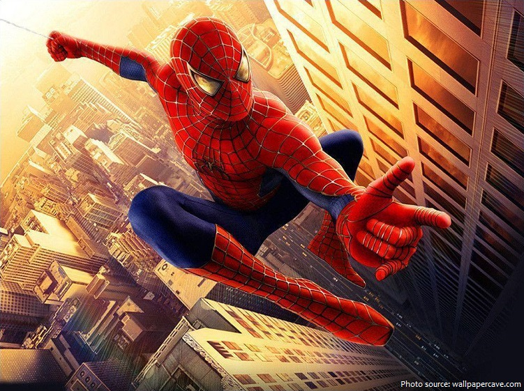
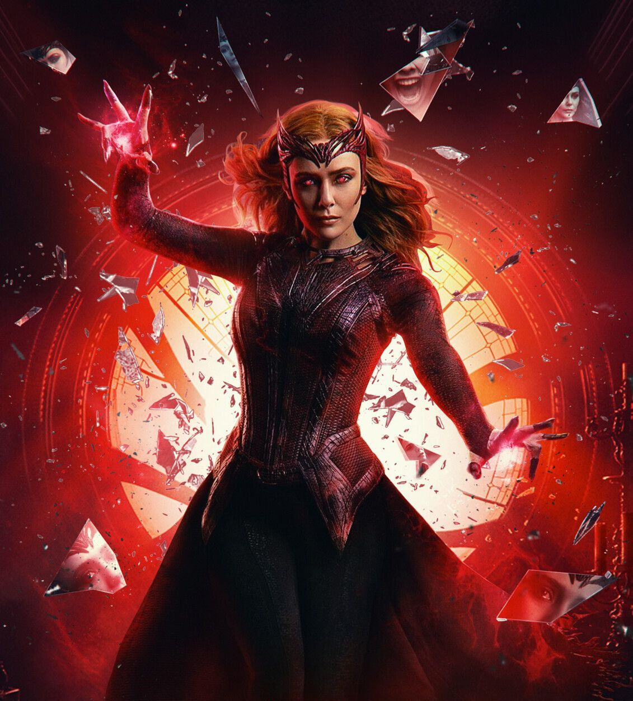
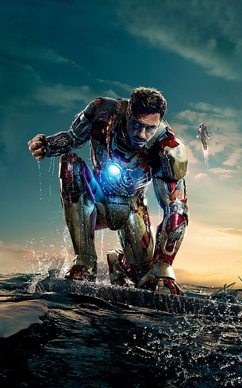

Spider-Man is a superhero appearing in American comic books published by Marvel Comics. Created by
writer-editor Stan Lee and artist Steve Ditko.
SPIDERMAN

CAPTAIN AMERICA

Wanda is initially depicted as a Sokovian refugee who, along with her twin brother Pietro,
volunteers to be experimented on by Hydra.
WANDA MAXIMOFF

Iron Man is a superhero appearing in American comic books published by Marvel Comics.
Co-created by writer and editor Stan Lee.
IRONMAN